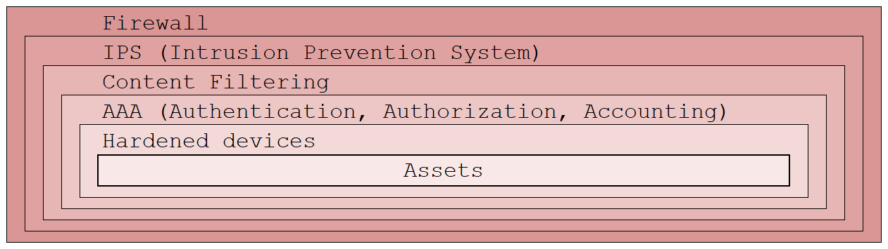

Protect
企業內部想要制定方案來保障網絡資料安全，要借助 CIA 三要素：
● Confidentiality
● Integrity
● Availability
It means that only the authorized individuals/systems can view sensitive or classified information. A primary way to achieve this is to use encryption techniques, such as AES and DES.
It means making sure that data has not been modified. The primary way is hash function. The two common types are SHA and MD5.
This means the network should be readily available to its users. To ensure availability, the network administrator should maintain hardware and have a plan for fail-over and prevent bottleneck in a network. And take measures to prevent DoS and DDoS attack.
根據 configured rules 去對 Layer 3 和 Layer 4 進行篩選。
篩選對像除了 Layer 3 和 Layer 4 外，還會對同一個 connection 中的前後文內容進行分析。
(Next-Generation Firewall)
除了傳統防火牆的功能外，還包括：
● 線上 DPI (deep packet inspection)
● IPS (入侵預防系統)
● 應用層偵測與控制
● SSL/SSH檢測
● 網站過濾
● QoS/頻寬管理
● AAA
AAA
● Authentication – who are you
● Authorization – how powerful you are
● Accounting – records what you did
深度防禦。通常會用 security onion 來描述 defense-in-depth。
攻擊者需要一層一層地剝開防禦層。
隨住網絡的演變，比如現在更多地使用無線網絡，有時 security onion 並不適用，采用 security artichoke 來形容會更恰當。Artichoke 的特點是黑客不需要一層一層擊破，只需要找到其中關鍵的葉子來擊破，就可以成功入侵。